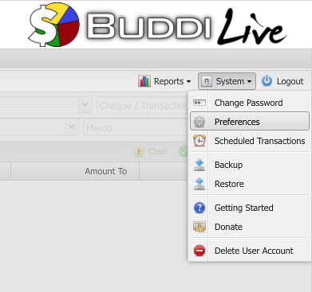
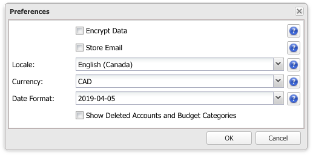
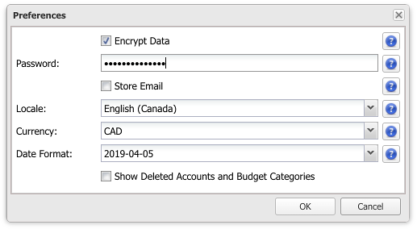
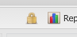

Buddi Live Tutorial - Preferences
Buddi Live was written with simplicity in mind. Thus, there are not a lot of options. However, there are some, and it is important to understand what these options do.
To view / edit the system preferences, go to the toolbar menu and select System -> Preferences.

- Encrypt Data. This option specifies whether your sensitive data is encrypted in the database. This will protect your data in the event of a data breach. The only downside to encrypting the data is that there is no 'backdoor'. If you forget your password and your data is encrypted, there is no way to recover it.
- Store Email. Your login name (email address) is hidden so that even the system administrator cannot see what it is. This allows for improved privacy and security, as there is nothing that can link your account back to you. However this also has the disadvantage of not enabling you to receive system emails, updates, etc. By enabling the 'Store Email' option, you are telling the system to store your email address without encryption in the database, and opting in to receiving email about the system.
- Locale. This is your preferred locale / language.
- Currency. The currency used in your account. This, in combination with your locale, will determine what currency sign to use.
- Date Format. Your preferred date format. You can choose to use the default for your locale, or pick a specific format.
- Show Deleted Accounts / Budget Categories. Enable this option to show accounts / budget categories which have been marked as deleted. This can be useful when reviewing old transactions.

For privacy conscious individuals it is recommended to select the 'Encrypt Data' option and not select the 'Store Email' option. When enabling encryption you will be prompted for your password. This is the password that is used for encryption, so it is critical that it is a good quality password.

When encryption is enabled, you will see a lock icon in the toolbar, next to the Reports menu:

Back to Tutorials page